Topologische Abfragen
Während geometrische Selektionskriterien Geoobjekte anhand ihrer Position und thematische Abfragen Elemente bezüglich ihrer Eigenschaften identifizieren, basieren die topologischen Suchkriterien auf der relativen Anordnung der Geoobjekte im Raum. Ein typisches Merkmal relativer Verortung ist der Vergleich mit anderen Geoobjekten z. B. wie „nächster“, „Teil von“ oder „innerhalb“. Die räumlichen Lagebeziehungen werden in GI-Systemen als Topologie bezeichnet. Topologische Beziehungen werden aus den geometrischen Primitiven aufgebaut: Punkte (einfachstes Element), Linien (Reihe von verbundenen Punkten), Flächen (Reihe von verbundenen Linien). Anhand dieser geordneten Struktur ist das GI-System in der Lage, die topologischen Beziehungen zu erkennen und entsprechende Analysen durchzuführen.
Folglich beschäftigt sich die Topologie mit den räumlichen und strukturellen Eigenschaften der geometrischen Objekte unabhängig von ihrer Ausdehnung und ihrer geometrischen Form. Zu den topologischen Eigenschaften gehören die Anzahl der Dimensionen eines Objektes und die möglichen Beziehungen zwischen den Dimensionen. Die Topologie ermöglicht Analysefunktionen wie die Verfolgung einer Strömung entlang verbundenen Linien eines Netzwerkes, das Vereinigen benachbarter Flächen mit ähnlichen Eigenschaften etc..
Es ist allerdings essentiell zwischen den zwei üblichen Datenformaten zu unterscheiden: Topologische Operationen auf Vektordaten sind völlig unterschiedlich zu topologischen Operationen auf Rasterdaten. Daher sind die Algorithmen, die für Vektordaten gültig sind, nicht ohne weiteres auf Rasterdaten anwendbar. In der Folge beschränken wir uns auf die topologischen Operationen bei Vektordaten.
Typisierung topologischer Beziehungen
Eine einfache Methode zur Typisierung topologischer Beziehungen wurde von (1993) vorgeschlagen. Sie wird als 9-Intersection Schema bezeichnet. Das Intersection-Schema ist ein elegantes Konzept zur Klassifikation von topologischen Konfigurationen. Die grundsätzliche Idee basiert auf dem Konzept, dass jedes Element aus einem Rand (b), einem Inneren (i) und einem Komplement (e) besteht. Die Konzepte von Innerem, Rand und Komplement (Äußerem) sind in der allgemeinen Topologie definiert.
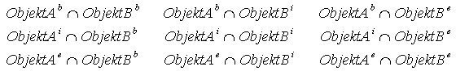
(GITTA 2005)Wenn die der äußeren Umgebung (Komplement) entsprechende Zeile und Spalte aus der Matrix weglassen wird, erhält man das 4-Intersection-Schema, welches häufig als vereinfachte Grundlage für die Untersuchung topologischer Beziehungen verwendet wird, aber nicht so mächtig wie das 9-Intersection-Schema ist.
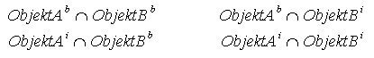
(GITTA 2005)Topologische Beziehungen kompakt
Versuchen Sie anhand der folgenden Tabelle das 9-I-Schema und das 4-I-Schema (Egenhofer et al. 1993) für einige typische topologische Beziehungen zwischen zwei Flächen nachzuvollziehen. Die Beziehungen sind durch die Werte 0 oder 1 gegeben. Jedes Paar hat eine leere (0) oder eine belegte (1) Schnittmenge.
| Topologische Beziehungen | Graphische Darstellung | 4-Intersection-Matrix | 9-Intersection-Matrix |
|---|---|---|---|
| Disjoint | 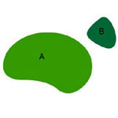 |
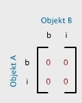 |
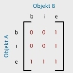 |
| Meet | 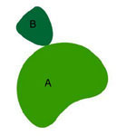 |
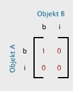 |
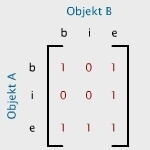 |
| Overlap | 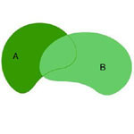 |
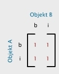 |
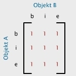 |
| Contains | 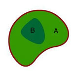 |
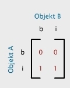 |
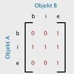 |
Bearbeiten Sie...
Betrachten Sie die nachfolgende Abbildung und versuchen Sie die
korrekte 4- bzw. 9-Intersection-Matrix zuzuordnen. Können Sie ein Problem
artikulieren?
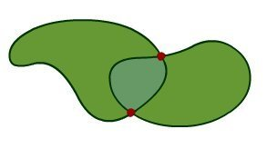 |
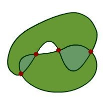 |
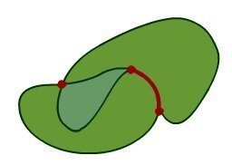 |
Klicken Sie hier für mehr Informationen